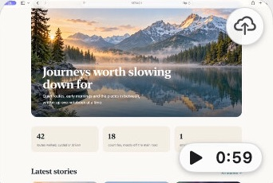
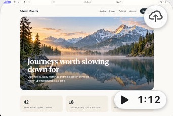
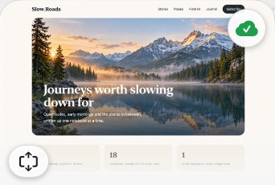
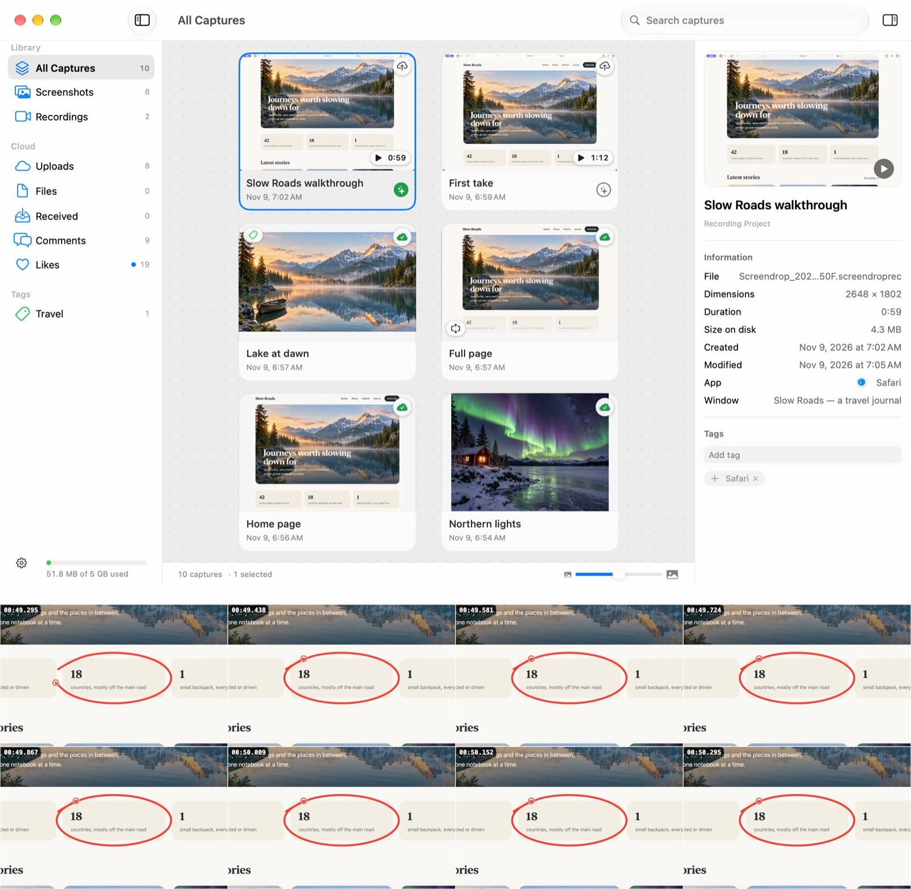

Show don’t tell
don’t tell
Sukusho is a free, open-source Mac app that captures and records your screen, marks it up, and sends a link from your own Cloudflare Worker.
Version 1.2.0 · macOS 27 or later · Apple silicon · 9.7 MB

Find
4 of 10 captures

…42 routes walked, cycled or driven…

…42 routes walked, cycled or driven…

…42 routes walked, cycled or driven…
The Library reads the words in every screenshot, and in recordings three frames and their captions, on your Mac. Nothing it reads is uploaded.
Type app: and a name to keep only what you captured in that app.
Switches in Sukusho
Keep the clutter out of recordings
Clean desktop leaves desktop icons, the Dock and notification banners out of display and area recordings. It's on by default, and your real desktop never changes.
Clean up your voice after the take
Isolate voice runs Apple's voice isolation on the microphone track. System audio and the original recording stay untouched.
Seal a link even your server can’t read
End-to-end encryption seals images and files up to 32 MB on your Mac with CryptoKit. The key travels only in the part of the link after the #, which browsers never send.
Turn a take into a bug report
Bug report writes every click, shortcut, scroll and pen stroke into a prompt for a coding agent, with a still of each moment, and a report with the steps for a person.
Shake a file to share it
Shake the pointer while you drag files from Finder and a shelf appears under it. Drop them on Share… and the links are copied.
First, take the shot
⇧⌘3 draws an area, ⇧⌘6 records the screen. Each capture lands in the Library with the app and window it came from and the words read in it.

- Capture
- Mark up
- Share
- Reply
Every window:
the Library , the editor, Studio , Share Options
, Share Options , a share page
, a share page , a gallery
, a gallery , its lightbox
, its lightbox , Comments
, Comments , a Bug Report
, a Bug Report .
.

Ten screenshots of Sukusho on macOS 27, taken in November 2026. Each name opens its picture.
Nothing leaves your Mac without you
| Captures, recordings, edits | This Mac | Always |
|---|---|---|
| Transcripts and text read in captures | This Mac | Never uploaded |
| Titles and tags from Apple Intelligence | This Mac | Never uploaded |
| Uploads, comments and likes | Your Worker | When you share |
| Upload token and encryption keys | The Keychain | Stay on this Mac |
| Update checks | GitHub Pages | Daily, if you allow it |
| Unsplash and Free To Use | Their servers | When you search |
| A Sukusho account | None | Never |

Before you download
Is Sukusho free?
Yes. It's open source under the MIT licence, with no account and no subscription. Share links come from a Worker you run in your own Cloudflare account.
What do share links need?
A Cloudflare account and the Sukusho Worker, 2.1.0 or later. Deploy it from its repository, or with Deploy to Cloudflare in Settings › Cloud, then paste its address there. Capturing, recording and editing work without it.
Which Macs does it run on?
Macs with Apple silicon running macOS 27 or later.
How does it stay up to date?
Choose Sukusho › Check for Updates… at any time. On its second launch Sukusho asks whether to check by itself once a day, and Settings › About › Updates changes the answer. Updates come from GitHub and install only if they carry this project's signature.
Is this Screendrop?
Sukusho began as a fork of Screendrop by Fayaz Ahmed and has grown into its own app, with its own name, features and Worker. It isn't affiliated with or supported by Screendrop. The two install side by side, and Sukusho brings over Screendrop's captures and settings once, the first time it opens.
What does the name mean?
スクショ, sukusho, is Japanese shorthand for a screenshot.